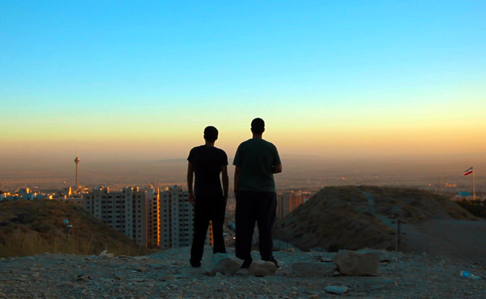

‘Raving Iran’ and the Dancefloor’s Countercultural History
{kind=link}

Raving Iran opens with a ritual that is about as familiar to dance culture as the squiggly acid that emanates from a Roland 303: The documentary’s protagonists are organizing an illegal rave. They select a location that’s a comfortable distance from prying eyes; they figure out how to dodge the relevant authorities; and in classic promoter fashion, they organize bribes to pay off the relevant stakeholders. Finally, Anoosh and Arash jump on the phone to round up their mates.
The formative, early illegal raves in countries like Britain and the US took place in abandoned warehouses; in Iran, they’re out in the desert. Rather than avoiding waking up nearby residents, they’re instead worried about being heard by the local cameleers.
In Raving Iran, the stakes are just a little higher. Anoosh and Arash are the DJ/producer duo Blade&Beard, hailing from the Iranian capital of Tehran, and like any other underground techno act, they want to promote their music and throw some cool parties.
However, Iran’s status as an Islamic republic means there are stringent restrictions on cultural activities, as well as severe penalties for those who fail to comply. The country has one of the most oppressive regimes in the world, and the music of Blade&Beard falls well outside the parameters of the Ministry of Culture and Islamic Guidance, which permits only traditional and classical music. And the raves they’re throwing aren’t exactly legal, either.
Early in Raving Iran, the duo drive to discreetly pick up their sound system in an underground car park, and there’s a real sense of elation when they evade discovery at a police check.
“I’m still shaking,” Anoosh laughs. “You should have given them our album,” his partner guffaws; it’s a cheeky reference to the fact that their demo CDs could have them landed in jail.
The existential threats faced by Anoosh and Arash in Raving Iran are hardly cerebral or emotional; the dangers of participating in dance culture are very tangible, indeed. In March this year, a similar collective of creatives—two musicians and one filmmaker—had their appeals overturned for their three-year jail sentence for distributing unlicensed underground music. The police force responsible for enforcing Islamic lifestyle ethics, referred to as the “morality police,” found the trio guilty of “insulting Islamic sanctities,” “spreading propaganda against the system,” and committing “illegal audio-visual activities,” reports The Guardian.
We spoke with Raving Iran’s director, Susanne Meures, a German filmmaker who visited Tehran to film in 2014. The result is a rather gripping documentary that’s turned plenty of heads this year within the global dance community and beyond.
“It’s a documentary about a lost generation in a country we’re not so familiar with,” says Meures. “I was trying to offer a deeper insight into something that we don’t know a lot about. Our view of Iran is so fogged by what’s seen in the media, though we’re rarely offered an up-close view.”
Meures’ primary intention with Raving Iran was to counter the stereotypes we have of Iran—to drop the veil and allow for a real, visceral and relatable connection. Instead of pandering to pre-existing notions of an oppressive Middle Eastern society, it aims to bring us closer to the reality of being a young person in the country.
“The most important thing for me was to show a generation and to demystify Iran as a country. I believe in empowering a counterculture and actually giving them a face and a voice.”
What leaves the biggest impact is actually those moments when the repressive elements of the regime have been dodged, and Anoosh and Arash continue on their merry way; you realize just how much of a parallel life they’re living. Their rapport is familiar, their banter recognizable, and their connection with the music is something we can all relate to.
However, there’s also a real sense of the stakes being high. At one point, after narrowly escaping detection by the police, Arash reassures his anxious and shaken friend.
“They caught me once and almost beat me to death. Do you see the scars? They’ll be there forever,” he says. The sentiment inspires them to push forward, rather than retreat.
In other moments, when they’ve successfully evaded detection, you can get a real sense of elation among the pair. Is the outsider status that’s forced upon them something that would deepen their bond with the culture? Meures doesn’t think so.
“They didn’t see making music and organizing parties as an act of rebellion,” she says. “They did it because they wanted a normal life and a feeling of freedom in their lives.”
Meures asserts that the nature of Iran’s regime sets it apart from what blossomed in other scenes around the world, and she emphasizes that her subjects were wholly apolitical in their intentions. However, this misses how frequently dance culture has been pitted against the establishment throughout its 30-year lifespan, and how often its inhabitants have been unwittingly politicized—when just like Anoosh and Arash, all they wanted to do was dance.
Even in the democratic countries where dance culture laid down its early roots, it was often treated explicitly as a threat by the establishment. In some instances, it resulted in draconian new laws that sent people to jail. British ravers in particular were unwittingly politicized when the Thatcher administration declared war on acid house.
“As the media sensationalized the dangers of acid house and ecstasy, the movement became a challenge to authority, prompting parliament to pass new laws aimed at curbing the revolution and the police to establish a unit dedicated to stopping unlicensed parties,” author and music journalist Luke Bainbridge wrote for The Guardian. “A movement that had been pro-hedonism rather than anti-authority became political by default.”
Notoriously, Britain’s Criminal Justice and Public Order Act from 1994 featured an infamous “Section 63” that granted police specific rave-related powers, granting them powers to shut down events featuring music “characterised by the emission of a succession of repetitive beats.”
The genesis of Detroit techno in the late ‘80s offered futuristic optimism in the face of dystopian shadows of the city’s collapsing car manufacturing industry. Later, though, the establishment hysteria grew a little more heated. The draconian RAVE Act was spearheaded and sponsored by none other than outgoing Vice President Joe Biden, who put rave promoters firmly in the crosshairs (with a revised yet very similar law eventually passing in 2003).
However, the RAVE Act came years after former New York Mayor Rudy Giuliani hit the city’s rave scene so hard in the late ‘90s that he all but destroyed it. Enacting dormant Prohibition-era legislation, he throttled the city’s legendary nightclub scene with a long-running campaign from city authorities; as a result, seminal clubs like Twilo now live on only in our memory.
In other global instances, the political dynamics of early scenes similarly made them political by default. While the ‘90s techno scene in Berlin is unique, in that it grew from the euphoria of a newly reunified Germany, the burgeoning techno scenes across Eastern and Central Europe grew in the shadow of post-Soviet-era politics. The legendary scene of Serbian capital Belgrade throughout the ‘90s was set among particularly turbulent political conditions, with the NATO bombardment in the late ‘90s creating the rather evocative image of Belgrade’s clubbers continuing to dance as bombs dropped from the sky all over their city.
This is not to make a novelty of the struggles of Arash and Anoosh. These are captured best in Raving Iran during the extraordinary scenes where they visit the Ministry of Culture and Islamic Guidance in a fruitless attempt to have their music legitimately “registered” and to gain a “permit” that would award them state approval (spoiler: the answer was “no”).
However, arguably one of the reasons why Raving Iran resonated so much with international dance fans, and equally why the documentary so successfully achieved its goal of demystifying Middle Eastern culture, is that it showed how much the Tehran rave scene has in common with the rest of the world, in spite of such different political contexts.
In Raving Iran, disparate realities collide. In a country that might appear distant and impenetrable to us, it turns out in some ways they’re not so different after all.